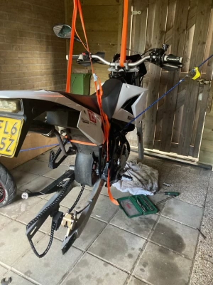
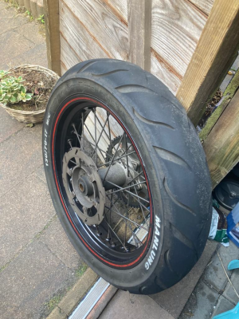
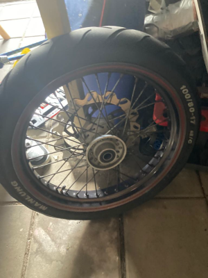

Banden vervangen
- Voorbereiding: Zorg voor alle benodigde tools en een stabiele ondergrond.
- Opkrikken: Gebruik een krik om de motor op te tillen.
- Ketting Verwijderen: Ontspan de ketting met een kettingspanner en haal deze van de tandwielen.
- Remklauwen Losmaken: Draai de bouten van de remklauwen los en hang ze veilig aan de kant.
- Oude Band Verwijderen: Gebruik een bandenlichter om voorzichtig de oude band van de velg te halen.
- Nieuwe Band Monteren: Plaats de nieuwe band op de velg en zorg voor een goede uitlijning.
- Remklauwen en Ketting Terugplaatsen: Bevestig de remklauwen, draai de bouten vast en plaats de
ketting terug op de tandwielen.
- Bandenspanning Controleren: Controleer en pas de bandenspanning aan indien nodig.
- Herhaal indien Nodig: Herhaal de stappen voor de andere band als beide moeten worden vervangen.


